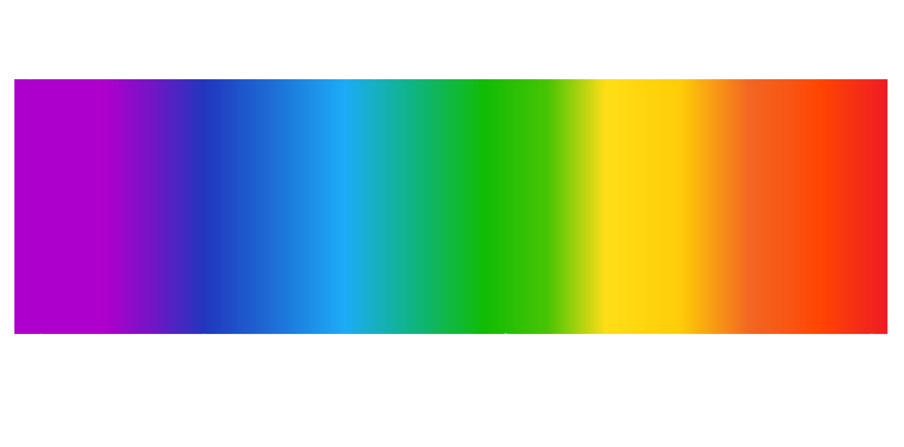

All light is part of a big family called electromagnetic radiation.
We can only see a small part of it called visible light. Our eyes have special cells that can pick up these visible light waves.
When you shine light through a prism, all visible colours spread out because each colour has a different size of wave, much like in noise frequency. These colours make up what we can see in a rainbow.
See how light shines through a prism using this simulator.
Move your mouse towards the triangle to activate the white light. Then, move your mouse up or down to see how the colours respond!
We can use a visible light spectrum chart to understand fully how each colour has a differently sized light waves.
Measured in nanometers(nm), each colour's wave is differently sized.
Violet is at one end of the visible light spectrum with the shortest waves at around 400nm long. Red is at the other end with the longest waves which is about 700nm long.
This can explain why it might be harder to see some colours over others.
On the colour wheel, colours such as violet are associated with shorter wavelengths, while others such as red are linked to longer wavelengths.
Colours are arranged on the wheel from shortest (violet) to longest (red) as a spectrum of wavelengths, much like the visible light spectrum chart above.
In this context, frequency tells us how often a colour will pass by in a second while the wheel is spinning.
Shorter wavelength colours like violet pass by your eyes more frequently because they're closer together on the wheel. This means they have a higher frequency.
Longer wavelength colours like red pass by less frequently because they're farther apart on the wheel, resulting in a lower frequency.